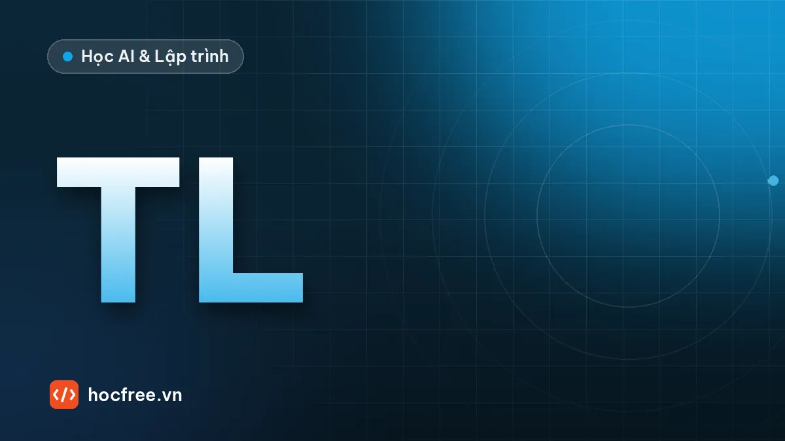

Dự án: phân loại ảnh OK/NG bằng transfer learning PyTorch, xuất ONNX
Tinh chỉnh ResNet18 với ít ảnh: đóng băng rồi mở băng, augmentation an toàn, chọn ngưỡng theo escape, ma trận nhầm lẫn, xuất ONNX và so khớp kết quả.

Học xong bài này, bạn sẽ
- Tinh chỉnh mô hình có sẵn với ít dữ liệu
- Đánh giá bằng ma trận nhầm lẫn
- Xuất mô hình ONNX
Nên học trước: Overfitting và chia train/val/test
Nội dung bài viết
Đây là dự án tổng kết chặng 10. Bạn đã biết mô hình học bằng gradient descent, CNN trích đặc trưng thế nào, viết vòng lặp huấn luyện PyTorch, nạp ảnh bằng Dataset với augmentation an toàn, và chia dữ liệu theo lô để không rò rỉ (bài "Overfitting và chia train/val/test"). Giờ ghép tất cả thành một bộ phân loại OK/NG hoàn chỉnh theo cách các kỹ sư làm khi chỉ có vài trăm ảnh: transfer learning, tức lấy một mạng đã học trên hơn một triệu ảnh ImageNet (ResNet18, MobileNet) và tinh chỉnh nó cho ảnh của bạn. Sản phẩm cuối là một file ONNX đã kiểm chứng, một ngưỡng chọn theo escape, và một báo cáo ma trận nhầm lẫn mà bạn có thể đưa cho trưởng bộ phận chất lượng. Chặng 11 sẽ đi sâu vào chiến lược dữ liệu và cách chọn ngưỡng; chặng 13 đưa file ONNX này lên máy trạm.
pip install torch torchvision onnx onnxruntime onnxscript opencv-python scikit-learn numpy1. Yêu cầu
| Hạng mục | Yêu cầu |
|---|---|
| Dữ liệu | Ảnh ROI chi tiết đã cắt sẵn, nhãn OK/NG, có mã lô cho từng ảnh. Dùng bộ dữ liệu của bạn, hoặc bộ mẫu tổng hợp trong lời giải (240 ảnh tấm nhôm, 8 lô, 20% NG) |
| Chia tập | Theo lô: không lô nào có ảnh ở hai tập. Tập test chỉ dùng một lần ở cuối |
| Mô hình | ResNet18 (hoặc MobileNetV3) pretrained ImageNet, thay lớp cuối thành 2 lớp ["OK", "NG"], OK = 0, NG = 1 |
| Huấn luyện | Hai giai đoạn: đóng băng thân mạng chỉ học lớp cuối, sau đó mở băng toàn bộ với learning rate nhỏ. Augmentation chỉ gồm biến đổi an toàn cho ảnh công nghiệp. Xử lý mất cân bằng lớp. Giữ checkpoint tốt nhất theo loss val |
| Ngưỡng | Chọn trên tập val: không lọt ảnh NG nào của val, trong đó chọn ngưỡng cho ít loại nhầm nhất |
| Báo cáo trên test | Ma trận nhầm lẫn, recall lớp NG, số ảnh NG bị lọt (kèm tên file), tỉ lệ loại nhầm OK, ở cả ngưỡng 0,5 và ngưỡng đã chọn |
| Triển khai | File ok_ng.onnx (một file, batch động), onnx.checker hợp lệ, sai khác xác suất NG giữa ONNX Runtime và PyTorch dưới 10−4, quyết định OK/NG khớp 100%; thẻ mô hình JSON ghi tiền xử lý, thứ tự lớp, ngưỡng |
2. Kiến thức sử dụng
- Vòng lặp 4 bước,
model.train()/model.eval(),torch.no_grad(),state_dictvàtorch.load(weights_only=True): bài "PyTorch cơ bản: tensor, autograd, vòng lặp huấn luyện". - Dataset đọc ảnh bằng OpenCV, BGR→RGB, HWC→CHW, chuẩn hóa; augmentation an toàn với
transforms.v2; viền đen doRandomAffinevà cách cắt bỏ bằngCenterCrop; mất cân bằng lớp: bài "Dataset, DataLoader và augmentation". - Chia theo lô, early stopping, đọc loss val: bài "Overfitting và chia train/val/test".
- Escape, overkill, ma trận nhầm lẫn: các bài "Tiêu chí OK/NG, escape và overkill" và "Precision, Recall và ma trận nhầm lẫn" ở chặng 5.
- Feature map, lớp Conv, global average pooling: bài "Mạng nơ-ron và CNN hoạt động thế nào".
3. Gợi ý thiết kế
Vì sao transfer learning hiệu quả với ít ảnh
Các lớp đầu của một CNN đã huấn luyện trên ImageNet học ra những bộ lọc rất chung: cạnh, góc, vân, đốm. Đó cũng chính là những gì cần để thấy vết xước hay vết lõm. Chỉ những lớp cuối mới đặc thù cho "chó, mèo, ô tô". Vì vậy ta giữ thân mạng (backbone), thay lớp phân loại cuối (fc của ResNet, có 1000 đầu ra) bằng lớp mới 2 đầu ra, và chỉ cần vài trăm ảnh để dạy lớp mới cùng tinh chỉnh nhẹ phần còn lại. Huấn luyện cùng mạng đó từ trọng số ngẫu nhiên thường cần nhiều dữ liệu hơn hẳn và kết quả kém ổn định hơn.
Đoạn code chuẩn trên máy của bạn (lần đầu chạy sẽ tải trọng số, ResNet18 khoảng 45 MB, về thư mục cache của torch):
# (minh họa) cần Internet để tải trọng số pretrained lần đầu
import torch
from torch import nn
from torchvision import models
weights = models.ResNet18_Weights.DEFAULT # trọng số ImageNet tốt nhất hiện có cho ResNet18
model = models.resnet18(weights=weights)
print(weights.transforms()) # tiền xử lý mà trọng số này được huấn luyện với
model.fc = nn.Linear(model.fc.in_features, 2) # 512 → 2 lớp: OK, NG
# Lựa chọn nhẹ hơn cho máy trạm không có GPU:
w_mb = models.MobileNet_V3_Small_Weights.DEFAULT
mb = models.mobilenet_v3_small(weights=w_mb)
mb.classifier[-1] = nn.Linear(mb.classifier[-1].in_features, 2)weights.transforms() cho biết mạng đã được huấn luyện với ảnh RGB chuẩn hóa mean [0.485, 0.456, 0.406], std [0.229, 0.224, 0.225]. Bạn phải dùng đúng mean/std này. Kích thước ảnh thì linh hoạt: nhờ lớp global average pooling, ResNet nhận được ảnh 64×64 hay 224×224; ROI nhỏ có lỗi nhỏ thì không nên thu nhỏ thêm (bài "Mạng nơ-ron và CNN hoạt động thế nào" giải thích receptive field).
PRETRAINED = False và chạy ResNet18 với weights=None (trọng số ngẫu nhiên), trên ảnh 64×64 để chạy nhanh trên CPU. Toàn bộ code giống hệt đường pretrained, chỉ khác dòng tạo mô hình và learning rate giai đoạn 2. Trên máy bạn, đặt PRETRAINED = True: giai đoạn đóng băng sẽ có ý nghĩa thật (đặc trưng ImageNet), huấn luyện ổn định hơn, và với dữ liệu thật thường đạt kết quả tốt hơn hẳn. Các con số trong bài là của mô hình không pretrained trên dữ liệu tổng hợp dễ, đừng so trực tiếp với dữ liệu của bạn.Chiến lược đóng băng, mở băng
ResNet18 có khoảng 11,2 triệu tham số, phần lớn nằm ở các khối cuối. Xem cấu trúc để biết đóng băng cái gì:
from torch import nn
from torchvision import models
m = models.resnet18(weights=None)
m.fc = nn.Linear(m.fc.in_features, 2)
for ten, khoi in m.named_children():
so = sum(p.numel() for p in khoi.parameters())
print(f"{ten:8s} {so:10,d} tham số")
print(f"{'tổng':8s} {sum(p.numel() for p in m.parameters()):10,d}")conv1 9,408 tham số
bn1 128 tham số
relu 0 tham số
maxpool 0 tham số
layer1 147,968 tham số
layer2 525,568 tham số
layer3 2,099,712 tham số
layer4 8,393,728 tham số
avgpool 0 tham số
fc 1,026 tham số
tổng 11,177,538| Giai đoạn | Học gì | Learning rate (pretrained) | Vì sao |
|---|---|---|---|
| 1. Đóng băng | Chỉ fc (1.026 tham số); BatchNorm của thân mạng để ở chế độ eval | 1e-3 | Lớp fc mới khởi tạo ngẫu nhiên tạo gradient lớn; nếu mở toàn bộ ngay, gradient đó phá hỏng đặc trưng pretrained |
| 2. Mở băng | Toàn bộ mạng (hoặc chỉ layer3, layer4, fc nếu rất ít ảnh) | 1e-4 hoặc nhỏ hơn | Tinh chỉnh nhẹ đặc trưng cho ảnh công nghiệp (mono, vân kim loại) vốn khác ảnh tự nhiên |
Khi đóng băng, đặt requires_grad = False cho tham số thân mạng và chỉ đưa tham số có gradient cho optimizer. Một chi tiết hay bị quên: BatchNorm vẫn cập nhật running_mean, running_var ở chế độ train dù requires_grad = False; với batch nhỏ, điều đó làm lệch thống kê pretrained. Lời giải đặt các lớp BatchNorm về eval() trong giai đoạn 1.
Augmentation an toàn và mất cân bằng
Theo bảng "an toàn và nguy hiểm" của bài "Dataset, DataLoader và augmentation": chi tiết có chấm định hướng ở góc trái trên nên không lật, không xoay lớn; lỗi gồm vết xước mảnh và vết lõm nhỏ nên không random crop, không làm mờ; độ sáng chỉ dao động ±10% theo biến động giữa các lô. Ảnh lưu 72×72, augment (xoay ±3°, dịch ±3%) rồi CenterCrop(64) để bỏ viền đen. Tập val/test chỉ CenterCrop(64).
Tập train có 20% NG. Lời giải dùng trọng số trong hàm loss CrossEntropyLoss(weight=[1, n_OK/n_NG]), mỗi lỗi trên ảnh NG "đắt" gấp 4 lần. WeightedRandomSampler là lựa chọn tương đương. Cân bằng lớp làm điểm số bị đẩy về phía NG; không sao, vì ngưỡng được chọn lại trên val.
Chọn ngưỡng theo escape
Mô hình trả về xác suất NG. Ngưỡng mặc định 0,5 không có lý do gì để đúng với nhà máy. Quy trình trong dự án: tính xác suất NG cho mọi ảnh val, lập bảng escape/overkill theo ngưỡng, chọn ngưỡng lớn nhất mà không lọt ảnh NG nào của val (ngưỡng lớn nhất thỏa ràng buộc escape cho overkill ít nhất), rồi áp dụng nguyên ngưỡng đó lên test. Với val chỉ có 12 ảnh NG, "không lọt ảnh nào" là một ước lượng rất thô; bài "Chọn ngưỡng mô hình AI theo escape, overkill và đo cycle time đúng cách" ở chặng 11 dạy cách tính khoảng tin cậy và chọn ngưỡng theo chi phí.
Sơ đồ lời giải
du_an/nhan.csv (đường dẫn, nhãn, lô)
│ 1. tạo dữ liệu (hoặc dùng dữ liệu của bạn)
│ 2. chia theo lô: train lô 0–3 | val lô 4–5 | test lô 6–7
│ 3. ResNet18 + fc 2 lớp; giai đoạn 1 đóng băng → giai đoạn 2 mở băng; giữ checkpoint loss val tốt nhất
│ 4. val: bảng ngưỡng → chọn ngưỡng không lọt NG
│ 5. test: ma trận nhầm lẫn, recall NG, ảnh NG bị lọt (một lần duy nhất)
└ 6. ONNX (dynamo, batch động) → checker → so ONNX Runtime với PyTorch → thẻ mô hình JSON4. Lời giải
Hãy tự làm trước, ít nhất đến bước 3. Lời giải gồm 6 đoạn, là 6 phần liên tiếp của cùng một script (hoặc 6 ô của một notebook); đoạn sau dùng hàm và biến của đoạn trước. Toàn bộ chạy khoảng nửa phút trên CPU 2 luồng.
Xem lời giải đầy đủ
Bước 1. Tạo bộ dữ liệu mẫu. Tấm nhôm chải xước như bài "Dataset, DataLoader và augmentation", có chấm định hướng; 8 lô, mỗi lô 24 OK và 6 NG, độ sáng mỗi lô khác nhau một chút. Nhãn và mã lô ghi vào CSV, đúng cách bạn nên tổ chức dữ liệu thật.
import csv
from pathlib import Path
import cv2
import numpy as np
rng = np.random.default_rng(0)
KT = 72 # lưu 72x72, mô hình dùng vùng giữa 64x64
def tam_nhom(rng, do_sang_lo):
van = rng.normal(0, 6, (KT, 1)) + rng.normal(0, 2, (KT, KT)) # vân ngang + nhiễu
xam = np.clip(do_sang_lo + van + rng.normal(0, 4), 0, 255)
anh = np.clip(np.stack([xam + 8, xam + 2, xam - 4], axis=-1), 0, 255).astype(np.uint8)
cv2.circle(anh, (11, 11), 3, (230, 230, 230), -1) # chấm định hướng
return anh
def them_loi(anh, rng):
anh = anh.copy()
if rng.random() < 0.6: # vết xước tối
x1, y1 = rng.integers(14, 58, 2)
goc, dai = rng.uniform(0, np.pi), rng.integers(10, 25)
x2, y2 = int(x1 + dai * np.cos(goc)), int(y1 + dai * np.sin(goc))
cv2.line(anh, (int(x1), int(y1)), (x2, y2), (70, 70, 70), 1, cv2.LINE_AA)
else: # vết lõm: đốm tối mờ
c = tuple(int(v) for v in rng.integers(16, 56, 2))
cv2.circle(anh, c, int(rng.integers(3, 6)), (95, 95, 95), -1, cv2.LINE_AA)
anh = cv2.GaussianBlur(anh, (3, 3), 0)
return anh
dong = []
for lo in range(8):
do_sang_lo = 150 + rng.normal(0, 5)
for i in range(30):
ng = i < 6
anh = tam_nhom(rng, do_sang_lo)
if ng:
anh = them_loi(anh, rng)
p = Path("du_an", "anh", f"lo{lo}", "NG" if ng else "OK", f"{lo}_{i:02d}.png")
p.parent.mkdir(parents=True, exist_ok=True)
cv2.imwrite(str(p), anh)
dong.append({"duong_dan": p.as_posix(), "nhan": int(ng), "lo": lo})
with open("du_an/nhan.csv", "w", newline="", encoding="utf-8") as f:
w = csv.DictWriter(f, fieldnames=["duong_dan", "nhan", "lo"])
w.writeheader()
w.writerows(dong)
print(len(dong), "ảnh,", sum(d["nhan"] for d in dong), "NG, 8 lô → du_an/nhan.csv")240 ảnh, 48 NG, 8 lô → du_an/nhan.csvBước 2. Dataset, chia theo lô, augmentation an toàn.
import csv
import cv2
import torch
from torch.utils.data import DataLoader, Dataset
from torchvision.transforms import v2
torch.manual_seed(0)
torch.set_num_threads(2)
MEAN, STD = (0.485, 0.456, 0.406), (0.229, 0.224, 0.225) # ImageNet: bắt buộc với mạng pretrained
LOP = ["OK", "NG"] # OK = 0, NG = 1
class AnhOkNg(Dataset):
def __init__(self, dong, transform):
self.dong, self.transform = dong, transform
self.mean = torch.tensor(MEAN).view(3, 1, 1)
self.std = torch.tensor(STD).view(3, 1, 1)
def __len__(self):
return len(self.dong)
def __getitem__(self, i):
d = self.dong[i]
bgr = cv2.imread(d["duong_dan"], cv2.IMREAD_COLOR)
if bgr is None:
raise IOError(f"Không đọc được {d['duong_dan']}")
x = torch.from_numpy(cv2.cvtColor(bgr, cv2.COLOR_BGR2RGB)).permute(2, 0, 1).contiguous()
x = self.transform(x).float() / 255.0 # augmentation trên uint8, rồi chia 255
return (x - self.mean) / self.std, int(d["nhan"])
with open("du_an/nhan.csv", encoding="utf-8") as f:
tat_ca = list(csv.DictReader(f))
CHIA = {"train": [0, 1, 2, 3], "val": [4, 5], "test": [6, 7]} # chia theo LÔ
tap = {k: [d for d in tat_ca if int(d["lo"]) in lo] for k, lo in CHIA.items()}
assert not {d["lo"] for d in tap["train"]} & {d["lo"] for d in tap["test"] + tap["val"]}
tf_train = v2.Compose([
v2.RandomAffine(degrees=3, translate=(0.03, 0.03)), # sai số định vị nhỏ; KHÔNG lật (có chấm định hướng)
v2.ColorJitter(brightness=0.1, contrast=0.1), # ±10%: biến động giữa các lô
v2.CenterCrop(64), # cắt bỏ viền đen do RandomAffine
])
tf_danh_gia = v2.CenterCrop(64)
ds = {"train": AnhOkNg(tap["train"], tf_train),
"val": AnhOkNg(tap["val"], tf_danh_gia), "test": AnhOkNg(tap["test"], tf_danh_gia)}
for k, v in ds.items():
so_ng = sum(int(d["nhan"]) for d in v.dong)
print(f"{k:5s}: {len(v):3d} ảnh, {so_ng:2d} NG, lô {CHIA[k]}")
n_ng = sum(int(d["nhan"]) for d in tap["train"])
n_ok = len(tap["train"]) - n_ng
TRONG_SO_LOP = torch.tensor([1.0, n_ok / n_ng]) # NG "đắt" gấp n_OK/n_NG lần
train_dl = DataLoader(ds["train"], batch_size=16, shuffle=True, drop_last=True)
val_dl = DataLoader(ds["val"], batch_size=64, shuffle=False)
test_dl = DataLoader(ds["test"], batch_size=64, shuffle=False)
print("trọng số lớp trong loss:", TRONG_SO_LOP.tolist())train: 120 ảnh, 24 NG, lô [0, 1, 2, 3]
val : 60 ảnh, 12 NG, lô [4, 5]
test : 60 ảnh, 12 NG, lô [6, 7]
trọng số lớp trong loss: [1.0, 4.0]Bước 3. Mô hình, đóng băng, huấn luyện hai giai đoạn. Mỗi epoch đánh giá trên val; giữ state_dict có loss val thấp nhất.
import copy
import torch
from torch import nn
from torchvision import models
PRETRAINED = False # máy bạn có Internet: đặt True
def tao_mo_hinh(pretrained):
weights = models.ResNet18_Weights.DEFAULT if pretrained else None
m = models.resnet18(weights=weights)
m.fc = nn.Linear(m.fc.in_features, len(LOP))
return m
def dong_bang_than(model, dong_bang):
for ten, p in model.named_parameters():
p.requires_grad = (not dong_bang) or ten.startswith("fc.")
return sum(p.numel() for p in model.parameters() if p.requires_grad)
def diem_ng(model, loader):
"""Xác suất NG và nhãn thật cho cả tập (model.eval + no_grad)."""
model.eval()
diem, nhan = [], []
with torch.no_grad():
for xb, yb in loader:
diem.append(torch.softmax(model(xb), dim=1)[:, 1])
nhan.append(yb)
return torch.cat(diem), torch.cat(nhan)
def huan_luyen(model, toi_uu, so_epoch, giai_doan, dong_bang, tot_nhat):
ham_loss = nn.CrossEntropyLoss(weight=TRONG_SO_LOP)
for epoch in range(1, so_epoch + 1):
model.train()
if dong_bang: # giữ thống kê BatchNorm của thân mạng
for mod in model.modules():
if isinstance(mod, nn.BatchNorm2d):
mod.eval()
tong, n = 0.0, 0
for xb, yb in train_dl:
loss = ham_loss(model(xb), yb)
toi_uu.zero_grad()
loss.backward()
toi_uu.step()
tong += loss.item() * len(yb)
n += len(yb)
p, y = diem_ng(model, val_dl)
loss_val = nn.functional.binary_cross_entropy(p.clamp(1e-6, 1 - 1e-6), y.float()).item()
dung = ((p >= 0.5).long() == y).float().mean().item()
moi = loss_val < tot_nhat["loss"]
if moi:
tot_nhat.update(loss=loss_val, state=copy.deepcopy(model.state_dict()), ten=f"{giai_doan}/{epoch}")
print(f"GĐ{giai_doan} epoch {epoch}: loss train {tong / n:.3f} | loss val {loss_val:6.3f} | "
f"val đúng {dung:.1%}{' ← tốt nhất' if moi else ''}")
torch.manual_seed(0)
model = tao_mo_hinh(PRETRAINED)
tot_nhat = {"loss": float("inf"), "state": None, "ten": ""}
so = dong_bang_than(model, True)
print(f"Giai đoạn 1: đóng băng thân mạng, học {so:,} tham số")
toi_uu = torch.optim.Adam([p for p in model.parameters() if p.requires_grad], lr=1e-3)
huan_luyen(model, toi_uu, 2, 1, True, tot_nhat)
so = dong_bang_than(model, False)
print(f"Giai đoạn 2: mở băng, học {so:,} tham số")
toi_uu = torch.optim.Adam(model.parameters(), lr=1e-4 if PRETRAINED else 5e-4)
huan_luyen(model, toi_uu, 8, 2, False, tot_nhat)
model.load_state_dict(tot_nhat["state"])
torch.save({"model": tot_nhat["state"], "lop": LOP, "mean": MEAN, "std": STD, "kich_thuoc": 64},
"ok_ng_resnet18.pt")
print("checkpoint tốt nhất:", tot_nhat["ten"], f"(loss val {tot_nhat['loss']:.3f}) → ok_ng_resnet18.pt")Giai đoạn 1: đóng băng thân mạng, học 1,026 tham số
GĐ1 epoch 1: loss train 0.728 | loss val 0.873 | val đúng 20.0% ← tốt nhất
GĐ1 epoch 2: loss train 0.738 | loss val 0.617 | val đúng 80.0% ← tốt nhất
Giai đoạn 2: mở băng, học 11,177,538 tham số
GĐ2 epoch 1: loss train 0.443 | loss val 1.779 | val đúng 20.0%
GĐ2 epoch 2: loss train 0.251 | loss val 0.462 | val đúng 80.0% ← tốt nhất
GĐ2 epoch 3: loss train 0.142 | loss val 0.783 | val đúng 36.7%
GĐ2 epoch 4: loss train 0.152 | loss val 0.537 | val đúng 90.0%
GĐ2 epoch 5: loss train 0.019 | loss val 0.241 | val đúng 90.0% ← tốt nhất
GĐ2 epoch 6: loss train 0.025 | loss val 0.200 | val đúng 93.3% ← tốt nhất
GĐ2 epoch 7: loss train 0.015 | loss val 0.120 | val đúng 96.7% ← tốt nhất
GĐ2 epoch 8: loss train 0.014 | loss val 0.108 | val đúng 98.3% ← tốt nhất
checkpoint tốt nhất: 2/8 (loss val 0.108) → ok_ng_resnet18.ptĐọc kết quả (con số có thể lệch đôi chút trên máy khác). Giai đoạn 1 với trọng số ngẫu nhiên chỉ học một lớp tuyến tính trên đặc trưng ngẫu nhiên nên tiến bộ ít; với trọng số pretrained, chính giai đoạn này thường đã cho kết quả khá. Độ chính xác val 80% ở cuối giai đoạn 1 chỉ là tỉ lệ ảnh OK trong val: mô hình đang trả lời OK cho mọi ảnh (20% ở epoch 1 là ngược lại, trả lời NG cho mọi ảnh). Đầu giai đoạn 2, loss val dao động mạnh (1,78 ở epoch 1, 0,78 ở epoch 3): các lớp BatchNorm vừa được học và thống kê running_mean/var của chúng đang thay đổi nhanh, nên mô hình ở chế độ eval tạm thời lệch. Từ epoch 5 loss val giảm đều, xuống 0,108 ở epoch 8. Đây là lý do phải giữ checkpoint tốt nhất theo val thay vì lấy epoch cuối, và lý do learning rate giai đoạn 2 phải nhỏ.
Bước 4. Chọn ngưỡng trên tập val.
import numpy as np
p_val, y_val = diem_ng(model, val_dl)
p_val, y_val = p_val.numpy(), y_val.numpy()
print("ngưỡng | lọt NG (val) | loại nhầm OK (val)")
for t in (0.05, 0.1, 0.2, 0.3, 0.5, 0.7, 0.9):
lot = int(((p_val < t) & (y_val == 1)).sum())
nham = int(((p_val >= t) & (y_val == 0)).sum())
print(f"{t:6.2f} | {lot:3d}/{int(y_val.sum())} | {nham:3d}/{int((y_val == 0).sum())}")
# ngưỡng lớn nhất mà không lọt NG nào của val = điểm NG thấp nhất trong các ảnh NG; lùi thêm 20% làm biên an toàn
NGUONG = round(float(p_val[y_val == 1].min()) * 0.8, 3)
print(f"điểm NG thấp nhất trong ảnh NG của val: {p_val[y_val == 1].min():.3f} → ngưỡng chọn {NGUONG}")
print(f"điểm NG cao nhất trong ảnh OK của val : {p_val[y_val == 0].max():.3f}")
print(f"tại ngưỡng {NGUONG}: lọt {int(((p_val < NGUONG) & (y_val == 1)).sum())} NG, "
f"loại nhầm {int(((p_val >= NGUONG) & (y_val == 0)).sum())} OK trên val")ngưỡng | lọt NG (val) | loại nhầm OK (val)
0.05 | 1/12 | 0/48
0.10 | 1/12 | 0/48
0.20 | 1/12 | 0/48
0.30 | 1/12 | 0/48
0.50 | 1/12 | 0/48
0.70 | 2/12 | 0/48
0.90 | 2/12 | 0/48
điểm NG thấp nhất trong ảnh NG của val: 0.003 → ngưỡng chọn 0.003
điểm NG cao nhất trong ảnh OK của val : 0.007
tại ngưỡng 0.003: lọt 0 NG, loại nhầm 4 OK trên valBảng cho thấy một tình huống rất hay gặp: ở ngưỡng 0,5, val lọt 1 ảnh NG, và ảnh đó có điểm NG cực thấp (0,003), thấp hơn cả vài ảnh OK. Ràng buộc "không lọt NG nào" vì thế kéo ngưỡng xuống gần 0, và cái giá là loại nhầm OK. Một ảnh NG "khó" duy nhất quyết định ngưỡng của cả trạm. Việc đúng lúc này không phải là chấp nhận ngay, mà là mở ảnh đó ra xem: nhãn có đúng không? Đó có phải loại lỗi chưa có đủ ví dụ trong train (ở đây có thể là một vết lõm mờ) không? Câu trả lời thường dẫn tới thu thêm ảnh loại lỗi đó, chứ không phải chỉnh ngưỡng. Biên an toàn 20% là một lựa chọn kỹ thuật cho tình huống có ít ảnh NG: ảnh NG khó nhất của test có thể có điểm thấp hơn ảnh NG khó nhất của val. Cái giá là có thể loại nhầm nhiều hơn một chút. Ghi lý do chọn ngưỡng vào thẻ mô hình.
Bước 5. Đánh giá một lần trên tập test.
from pathlib import Path
import numpy as np
from sklearn.metrics import confusion_matrix
p_test, y_test = diem_ng(model, test_dl)
p_test, y_test = p_test.numpy(), y_test.numpy()
ten_file = [Path(d["duong_dan"]).name for d in ds["test"].dong]
for ten_nguong, t in (("0,5 mặc định", 0.5), (f"{NGUONG} (chọn trên val)", NGUONG)):
du_doan = (p_test >= t).astype(int)
cm = confusion_matrix(y_test, du_doan, labels=[0, 1])
(tn, fp), (fn, tp) = cm
print(f"Ngưỡng {ten_nguong}")
print(" dự đoán OK dự đoán NG")
print(f" thật OK {tn:10d} {fp:10d}")
print(f" thật NG {fn:10d} {tp:10d}")
print(f" recall NG {tp / (tp + fn):.1%} | NG bị lọt: {fn} | loại nhầm OK: {fp}/{tn + fp} ({fp / (tn + fp):.1%})")
lot = [f"{ten_file[i]} (P(NG) = {p_test[i]:.3f})" for i in np.where((du_doan == 0) & (y_test == 1))[0]]
if lot:
print(" ảnh NG bị lọt:", ", ".join(lot))Ngưỡng 0,5 mặc định
dự đoán OK dự đoán NG
thật OK 48 0
thật NG 1 11
recall NG 91.7% | NG bị lọt: 1 | loại nhầm OK: 0/48 (0.0%)
ảnh NG bị lọt: 7_01.png (P(NG) = 0.192)
Ngưỡng 0.003 (chọn trên val)
dự đoán OK dự đoán NG
thật OK 43 5
thật NG 0 12
recall NG 100.0% | NG bị lọt: 0 | loại nhầm OK: 5/48 (10.4%)Hai ngưỡng cho hai câu chuyện khác nhau trên cùng một mô hình: ngưỡng 0,5 không loại nhầm chi tiết nào nhưng lọt 1/12 NG (recall 91,7%); ngưỡng chọn theo val không lọt NG nào (recall 100%) nhưng loại nhầm khoảng 10% chi tiết OK. Với lỗi mà khách hàng phạt nặng, ngưỡng thấp là lựa chọn đúng, và 10% loại nhầm được đưa sang trạm kiểm tra lại bằng mắt; mục tiêu cải tiến tiếp theo là kéo tỉ lệ đó xuống bằng dữ liệu tốt hơn. Đây là báo cáo bạn đưa cho bộ phận chất lượng: recall lớp NG, số ảnh NG bị lọt (kèm tên file để mở ra xem) và tỉ lệ loại nhầm, ở ngưỡng đã chọn trước khi nhìn tập test. Nếu kết quả test không đạt, đừng chỉnh ngưỡng theo test; hãy quay lại thu thêm dữ liệu, xem các ảnh bị lọt có điểm chung gì (loại lỗi, vị trí, lô), rồi lấy một tập test mới.
Bước 6. Xuất ONNX, kiểm tra và so khớp. Exporter mặc định của torch 2.14 (dynamo) khai báo batch động bằng dynamic_shapes theo tên tham số x của ResNet.forward; external_data=False để trọng số nằm trong một file duy nhất.
import hashlib
import json
import numpy as np
import onnx
import onnxruntime as ort
import torch
model.eval() # luôn gọi trước khi xuất
vi_du = next(iter(test_dl))[0][:1] # một ảnh thật đã qua tiền xử lý: (1, 3, 64, 64)
torch.onnx.export(
model, (vi_du,), "ok_ng.onnx",
input_names=["images"], output_names=["logits"],
dynamic_shapes={"x": {0: "batch"}}, # "x" = tên tham số forward của ResNet
opset_version=18,
external_data=False,
verbose=False,
)
mo_hinh_onnx = onnx.load("ok_ng.onnx")
onnx.checker.check_model(mo_hinh_onnx)
dau_vao = mo_hinh_onnx.graph.input[0]
print("đầu vào:", dau_vao.name, [d.dim_param or d.dim_value for d in dau_vao.type.tensor_type.shape.dim],
"| opset", mo_hinh_onnx.opset_import[0].version)
sess = ort.InferenceSession("ok_ng.onnx", providers=["CPUExecutionProvider"])
X_test = torch.cat([xb for xb, _ in test_dl]) # cả 60 ảnh test trong một batch
with torch.no_grad():
logit_pt = model(X_test).numpy()
logit_ort = sess.run(["logits"], {"images": X_test.numpy()})[0]
def softmax_ng(z):
z = z - z.max(axis=1, keepdims=True)
e = np.exp(z)
return e[:, 1] / e.sum(axis=1)
p_pt, p_ort = softmax_ng(logit_pt), softmax_ng(logit_ort)
sai_max = float(np.abs(p_pt - p_ort).max())
khop = float(np.mean((p_pt >= NGUONG) == (p_ort >= NGUONG)))
print(f"{len(p_pt)} ảnh test: sai khác P(NG) lớn nhất {sai_max:.2e} | quyết định khớp {khop:.0%}")
assert sai_max < 1e-4 and khop == 1.0
the = {
"ten": "ok_ng_resnet18", "file": "ok_ng.onnx",
"sha256": hashlib.sha256(open("ok_ng.onnx", "rb").read()).hexdigest(),
"pretrained": PRETRAINED, "torch": torch.__version__.split("+")[0],
"dau_vao": {"ten": "images", "shape": ["batch", 3, 64, 64], "kieu": "float32", "layout": "NCHW"},
"tien_xu_ly": {"doc_anh": "BGR uint8 (OpenCV)", "roi": "72x72, cắt giữa 64x64", "thu_tu_kenh": "RGB",
"chia": 255.0, "mean": list(MEAN), "std": list(STD)},
"dau_ra": {"ten": "logits", "lop": LOP, "ghi_chu": "softmax, cột 1 là xác suất NG"},
"nguong_ng": NGUONG, "ly_do_nguong": "lớn nhất không lọt NG trên val (lô 4-5), lùi 20%",
"kiem_chung_onnx": {"so_anh": len(p_pt), "sai_khac_max": sai_max, "khop_quyet_dinh": khop},
}
with open("ok_ng.json", "w", encoding="utf-8") as f:
json.dump(the, f, ensure_ascii=False, indent=2)
print("đã ghi ok_ng.onnx và thẻ mô hình ok_ng.json")đầu vào: images ['batch', 3, 64, 64] | opset 18
60 ảnh test: sai khác P(NG) lớn nhất 3.43e-07 | quyết định khớp 100%
đã ghi ok_ng.onnx và thẻ mô hình ok_ng.jsonSai khác cỡ 10−7 là sai số làm tròn float32 bình thường giữa hai thư viện; điều quan trọng là mọi quyết định OK/NG trùng nhau. Bài "Xuất ONNX và kiểm tra kết quả khớp PyTorch" ở chặng 13 đi sâu hơn: bộ ảnh vàng, kiểm tra tiền xử lý phía C#, các bẫy khi xuất.
5. Sai lầm thường gặp trong dự án này
- Dùng mean/std khác ImageNet (hoặc quên chuẩn hóa) với mạng pretrained: mạng vẫn học nhưng mất phần lớn lợi ích của transfer learning.
- Mở băng toàn bộ ngay từ đầu với learning rate lớn: lớp
fcngẫu nhiên phá hỏng đặc trưng pretrained trong vài batch đầu. - Copy augmentation của ví dụ ảnh tự nhiên (
RandomHorizontalFlip,RandomResizedCrop,ColorJitter(0.3)) cho chi tiết có hướng, lỗi nhỏ, lỗi màu. - ImageFolder sắp lớp theo chữ cái (
NG = 0,OK = 1) trong khi code trạm giả định cột 1 là NG. Ghi thứ tự lớp vào thẻ mô hình. - Chọn ngưỡng trên tập test hoặc báo cáo kết quả val như kết quả cuối.
- Chỉ báo cáo accuracy: với 20% NG, accuracy 90% có thể đang lọt một nửa số NG.
- Xuất ONNX khi mô hình đang ở chế độ train, hoặc không so ONNX với PyTorch trên ảnh thật.
6. Tự đánh giá
| Tiêu chí | Đạt | Tốt |
|---|---|---|
| Chia dữ liệu | Có train/val/test riêng | Chia theo lô (hoặc ngày), có kiểm tra không trùng lô và đã chạy script tìm ảnh trùng |
| Tiền xử lý | Đúng RGB, chia 255, mean/std ImageNet | Tiền xử lý viết thành một hàm duy nhất, ghi đầy đủ trong thẻ mô hình |
| Augmentation | Chỉ áp cho train | Mỗi phép có lý do theo trạm thật; đã lưu lưới ảnh batch để kiểm tra bằng mắt |
| Huấn luyện | Có hai giai đoạn đóng băng/mở băng, loss giảm | Giữ checkpoint tốt nhất theo loss val; đã so pretrained với không pretrained |
| Mất cân bằng lớp | Có xử lý (trọng số loss hoặc sampler) | Đã so hai cách trên val |
| Ngưỡng | Chọn trên val, không dùng test | Có bảng escape/overkill theo ngưỡng và lý do chọn được ghi lại |
| Báo cáo test | Ma trận nhầm lẫn, recall NG, số NG bị lọt | Liệt kê ảnh bị lọt và ảnh loại nhầm, có nhận xét nguyên nhân |
| ONNX | Xuất được file, chạy được bằng ONNX Runtime | Batch động, một file, checker hợp lệ, so khớp số và quyết định, có SHA-256 và thẻ mô hình |
7. Mở rộng
- So pretrained với không pretrained trên dữ liệu thật của bạn: chạy lời giải với
PRETRAINED = TruevàFalse, giảm dần số ảnh train (100%, 50%, 25%) và vẽ recall NG theo số ảnh. Bạn sẽ thấy khoảng cách lớn nhất khi dữ liệu ít. - MobileNetV3-Small thay ResNet18: ít tham số hơn khoảng 7 lần; đo độ chính xác và thời gian suy luận một ảnh trên CPU máy trạm.
- Chỉ mở băng
layer4+fcở giai đoạn 2 khi có rất ít ảnh, so với mở toàn bộ. - WeightedRandomSampler thay cho trọng số loss; so escape/overkill trên val.
- Nhiều loại lỗi: 3 lớp OK, xước, lõm; ma trận nhầm lẫn 3×3 cho biết loại lỗi nào hay bị nhầm thành OK.
- Bản đồ chú ý (Grad-CAM) để kiểm tra mô hình nhìn vào vết lỗi chứ không phải chấm định hướng hay mép ảnh.
- Chạy file ONNX trên luồng ảnh mô phỏng và đo thời gian xử lý mỗi chi tiết, chuẩn bị cho chặng 13.
Tóm tắt
- Transfer learning: giữ thân mạng pretrained ImageNet, thay lớp cuối, dùng đúng mean/std ImageNet; vài trăm ảnh là đủ để bắt đầu.
- Hai giai đoạn: đóng băng thân mạng (BatchNorm ở eval) học lớp cuối với lr khoảng 1e-3, rồi mở băng với lr nhỏ khoảng 1e-4; giữ checkpoint tốt nhất theo loss val.
- Augmentation an toàn (dịch, xoay nhỏ, độ sáng ±10%, cắt bỏ viền), không lật chi tiết có hướng; xử lý mất cân bằng bằng trọng số loss hoặc sampler.
- Chia theo lô; chọn ngưỡng trên val theo ràng buộc escape; báo cáo test một lần bằng ma trận nhầm lẫn, recall NG, số NG bị lọt, tỉ lệ loại nhầm.
- Xuất ONNX bằng exporter dynamo với
dynamic_shapes,external_data=False; kiểm tra bằngonnx.checker, so ONNX Runtime với PyTorch, ghi thẻ mô hình kèm ngưỡng và tiền xử lý.
Chặng tiếp theo bắt đầu với bài Rule-based hay Deep Learning?, nơi bạn học cách quyết định có nên dùng AI cho một bài toán kiểm tra hay không, trước khi đầu tư thu thập dữ liệu.
Bài tập thực hành
- Huấn luyện trên bộ dữ liệu của bạn (hoặc dataset mẫu), báo cáo recall lớp NG và số ảnh NG bị lọt.
Làm xong bài tập mới chuyển sang bài tiếp theo: tự viết code là cách duy nhất để nhớ lâu.